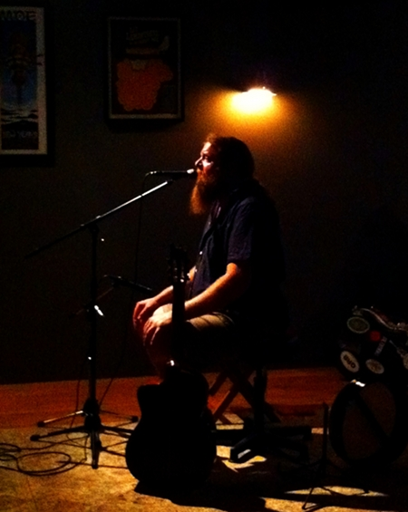
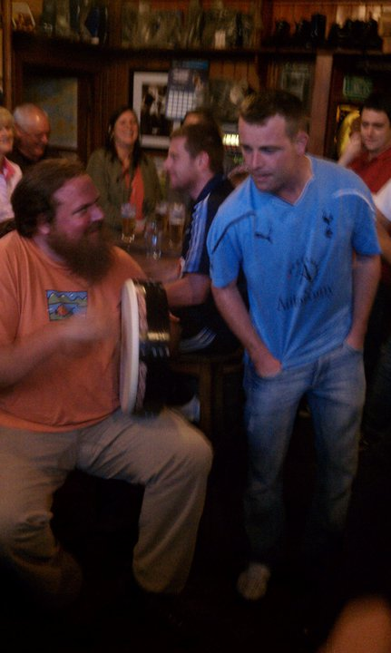

|
  |
James Olin Oden is a dynamic singer/songwriter from Raleigh, NC who plays a vast collection of stirring Scottish, Irish, English and original songs inspired by Celtic and Americana traditions. A passionate storyteller and captivating instrumentalist, he leads us through a musical journey that spans the globe and the epochs of time, with infectious rhythms paying reverent gratitude to the forefathers of folk, flamenco and Appalachian music. Like whiskey warming the soul, his deep, resonant voice is rich with character and his guitar, tin whistle, bones and bodhran (Irish drum) playing is both thrilling and evocative. Fast-paced foot stompers lay gracefully alongside heart-rending airs and ballads, weaving a tapestry of acoustic eloquence that will sweep you away to the lands of legend. As a member of the Friendly Fiddlers, the Gypsy Rovers, and the Irish Wolfhounds, James absorbed ancient songbooks bursting with enchanting stories that cried out for retelling and augments them with his own compelling originals filled with dark introspection and silly revelry. Careening between sensitive wedding chapel ballads, bawdy pub singalongs and everything in between, he creates an authentic and engaging musical experience custom tailored for each occasion. From the classic yearning sounds of the old-time originators to modern day influences that light a fire under your dancing shoes, listeners are swept away on an expedition through the evolution of music. As James says, “My hope is that, as my heart is moved by the music, so too may yours be moved.” What Others Are Saying "James Olin Oden’s folk sound on Samhain’s March reminds heavily of great tavern or pub music that can warm the soul just like a nice glass of whiskey." ...Romana Guillotte, Celtic Music Magazine (Dec 31, 2011) "James Olin Oden brings a feeling of the British Isles to North Carolina with his stirring vocals and evocative guitar accompaniment, interspersed with bodhran (Irish drum) and tin whistle playing. Pulling from a vast collection of Scottish, Irish, English, and self composed songs, he weaves a tapestry of acoustic eloquence that will whisk you away to the land of your dreams. James brings a sensitivity and feeling to his performance that you can't help but be drawn into. I have seen him perform from small home venues to large crowds and in every setting he seems to know how to fit his performance to the demands of the space and audience. James provides an authentic and engaging musical experience that is custom tailored to your specific requirements. From the sensitive ballad in a wedding chapel, to the bawdy, rowdy drinking singalong, James provides everything he does with a deep passion. If you're looking for Irish, or Celtic inspired entertainment for any occasion, be sure to give James a call. You will definitely be satisfied." Uillean Piper, Eric Hahn |